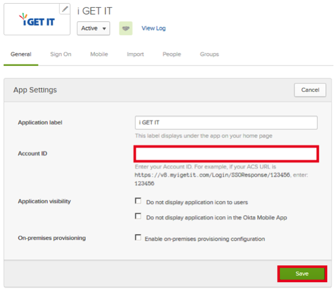

Attach the following data to your request:
In Okta, open the General tab for i GET IT, and paste your Account ID into the corresponding field:

Notes:
SP-initiated flows, IDP-initiated flows, and Just in Time (JIT) provisioning are all supported.
For SP-initiated flows, go to https://v8.myigetit.com/Login/SSORequest/[yourAccountID].